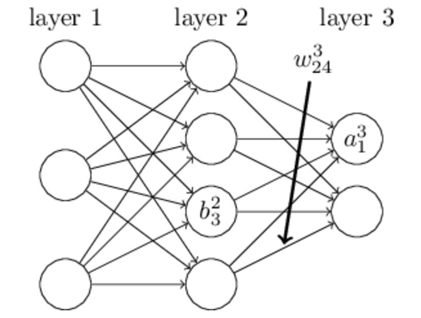

反向传播算法（过程及公式推导）
一、反向传播的由来
在我们开始DL的研究之前，需要把ANN—人工神经元网络以及bp算法做一个简单解释。
关于ANN的结构，我不再多说，网上有大量的学习资料，主要就是搞清一些名词：
输入层/输入神经元，输出层/输出神经元，隐层/隐层神经元，权值，偏置，激活函数
接下来我们需要知道ANN是怎么训练的，假设ANN网络已经搭建好了，在所有应用问题中（不管是网络结构，训练手段如何变化）我们的目标是不会变的，那就是网络的权值和偏置最终都变成一个最好的值，这个值可以让我们由输入可以得到理想的输出，于是问题就变成了y=f(x，w，b)（x是输入，w是权值，b为偏置，所有这些量都可以有多个，比如多个x1，x2，x3……最后f()就好比我们的网络它一定可以用一个函数来表示，我们不需要知道f(x)具体是怎样的函数，从小我们就认为只要是函数就一定要是可表示的，像f(x)=sin(x)一样，但是请摈弃这样的错误观念，我们只需要知道一系列的w和b决定了一个函数f（x），这个函数让我们由输入可以计算出合理的y）
最后的目标就变成了尝试不同的w，b值，使得最后的y=f（x）无限接近我们希望得到的值t
但是这个问题依然很复杂，我们把它简化一下，让（y-t）^2的值尽可能的小。于是原先的问题化为了C（w，b）=（f（x，w，b）-t）^2取到一个尽可能小的值。这个问题不是一个困难的问题，不论函数如何复杂，如果C降低到了一个无法再降低的值，那么就取到了最小值（假设我们不考虑局部最小的情况）
如何下降？数学告诉我们对于一个多变量的函数f(a,b,c,d,……)而言，我们可以求得一个向量，它称作该函数的梯度，要注意的是，梯度是一个方向向量，它表示这个函数在该点变化率最大的方向（这个定理不详细解释了，可以在高等数学教材上找到）于是C（w，b）的变化量ΔC就可以表示成
其中
是该点上的微小变化，我们可以随意指定这些微小变化，只需要保证ΔC<0就可以了，但是为了更快的下降，我们为何不选在梯度方向上做变化呢？
事实上，梯度下降的思想就是这样考虑的，我们使得从而保证C一直递减，而对于w来说只要每次更新即可。
ok，到这里，似乎所有的问题都解决了，让我们重新整理一下思绪，我们将问题转化了很多步：
网络权值偏置更新问题 ==> f（x，w，b）的结果逼近t ==> C（w，b）=（f（x，w，b）-t）^2取极小值问题 ==> C（w，b）按梯度下降问题 ==>取到极小值，网络达到最优
千万别忘了一点！！推导基于一个前提：我们已经提前知道了当前点的梯度。然而事实并非如此！！
这个问题困扰了NN研究者多年，1969年M.Minsky和S.Papert所著的《感知机》一书出版，它对单层神经网络进行了深入分析，并且从数学上证明了这种网络功能有限，甚至不能解决象"异或"这样的简单逻辑运算问题。同时，他们还发现有许多模式是不能用单层网络训练的，而对于多层网络则没有行之有效的低复杂度算法，最后他们甚至认为神经元网络无法处理非线性问题。然而于1974年，Paul Werbos首次给出了如何训练一般网络的学习算法—back propagation。这个算法可以高效的计算每一次迭代过程中的梯度，让以上我们的推导得以实现！！
不巧的是，在当时整个人工神经网络社群中无人知晓Paul所提出的学习算法。直到80年代中期，BP算法才重新被David Rumelhart、Geoffrey Hinton及Ronald Williams、David Parker和Yann LeCun独立发现，并获得了广泛的注意，引起了人工神经网络领域研究的第二次热潮。
二、原理的引入
上面已经提到，所谓反向传播，就是计算梯度的方法。对于反向传播，先不急着介绍它的原理，很多文章直接引入公式，反而使得我们很难去理解。这里先引入知乎上某位大神的回答。
来源：知乎https://www.zhihu.com/question/27239198?rf=24827633
假设输入a=2，b=1，在这种情况下，我们很容易求出相邻节点之间的偏导关系
利用链式法则：
以及
的值等于从a到e的路径上的偏导值的乘积，而
的值等于从b到e的路径1(b-c-e)上的偏导值的乘积加上路径2(b-d-e)上的偏导值的乘积。也就是说，对于上层节点p和下层节点q，要求得
，需要找到从q节点到p节点的所有路径，并且对每条路径，求得该路径上的所有偏导数之乘积，然后将所有路径的 “乘积” 累加起来才能得到
的值。
这种情况下偏导很容易求得，因为我们已经知道网络的函数关系式，e=（a+b）*（b+1），这是一个没有权值干预，已知输入与输出之间关系的网络。实际当中我们只是知道e与输出之间的关系，就是上面说的C=（y-t）^2，而且会有成千上万的权值和偏置干预求导的过程。那么换个思路，能不能求输出对结果的偏导呢？
再利用上图的关系。节点c对e偏导2并将结果堆放起来，节点d对e偏导3并将结果堆放起来，至此第二层完毕，求出各节点总堆放量并继续向下一层发送。节点c向a发送2*1并对堆放起来，节点c向b发送2*1并堆放起来，节点d向b发送3*1并堆放起来，至此第三层完毕，节点a堆放起来的量为2，节点b堆放起来的量为2*1+3*1=5, 即顶点e对b的偏导数为5。简要的概括，就是从最上层的节点e开始，以层为单位进行处理。对于e的下一层的所有子节点，将1乘以e到某个节点路径上的偏导值，并将结果“堆放”在该子节点中。等e所在的层按照这样传播完毕后，第二层的每一个节点都“堆放"些值，然后我们针对每个节点，把它里面所有“堆放”的值求和，就得到了顶点e对该节点的偏导。然后将这些第二层的节点各自作为起始顶点，初始值设为顶点e对它们的偏导值，以"层"为单位重复上述传播过程，即可求出顶点e对每一层节点的偏导数。
三、一个很好的例子
假设，你有这样一个网络层：
第一层是输入层，包含两个神经元i1，i2，和截距项b1；第二层是隐含层，包含两个神经元h1,h2和截距项b2，第三层是输出o1,o2，每条线上标的wi是层与层之间连接的权重，激活函数我们默认为sigmoid函数。
现在对他们赋上初值，如下图：
其中，输入数据 i1=0.05，i2=0.10;
输出数据 o1=0.01,o2=0.99;
初始权重 w1=0.15,w2=0.20,w3=0.25,w4=0.30;
w5=0.40,w6=0.45,w7=0.50,w8=0.88
目标：给出输入数据i1,i2(0.05和0.10)，使输出尽可能与原始输出o1,o2(0.01和0.99)接近。
Step 1 前向传播
1.输入层---->隐含层：
计算神经元h1的输入加权和：
神经元h1的输出o1:(此处用到激活函数为sigmoid函数)：
同理，可计算出神经元h2的输出o2：
2.隐含层---->输出层：
计算输出层神经元o1和o2的值：

这样前向传播的过程就结束了，我们得到输出值为[0.75136079 , 0.772928465]，与实际值[0.01 , 0.99]相差还很远，现在我们对误差进行反向传播，更新权值，重新计算输出。
Step 2 反向传播
1.计算总误差
总误差：(square error)

但是有两个输出，所以分别计算o1和o2的误差，总误差为两者之和：
2.隐含层---->输出层的权值更新：
以权重参数w5为例，如果我们想知道w5对整体误差产生了多少影响，可以用整体误差对w5求偏导求出：（链式法则）
下面的图可以更直观的看清楚误差是怎样反向传播的：
现在我们来分别计算每个式子的值：
计算：
计算：
（这一步实际上就是对sigmoid函数求导，比较简单，可以自己推导一下）
计算：
最后三者相乘：

这样我们就计算出整体误差E(total)对w5的偏导值。
回过头来再看看上面的公式，我们发现：

为了表达方便，用来表示输出层的误差：
因此，整体误差E(total)对w5的偏导公式可以写成：
如果输出层误差计为负的话，也可以写成：
最后我们来更新w5的值：

（其中，是学习速率，这里我们取0.5）
同理，可更新w6,w7,w8:
3.隐含层---->隐含层的权值更新：
方法其实与上面说的差不多，但是有个地方需要变一下，在上文计算总误差对w5的偏导时，是从out(o1)---->net(o1)---->w5,但是在隐含层之间的权值更新时，是out(h1)---->net(h1)---->w1,而out(h1)会接受E(o1)和E(o2)两个地方传来的误差，所以这个地方两个都要计算。

计算：
先计算：
同理，计算出：
两者相加得到总值：
再计算：
再计算：
最后，三者相乘：

为了简化公式，用sigma(h1)表示隐含层单元h1的误差：
最后，更新w1的权值：
同理，额可更新w2,w3,w4的权值：
这样误差反向传播法就完成了，最后我们再把更新的权值重新计算，不停地迭代，在这个例子中第一次迭代之后，总误差E(total)由0.298371109下降至0.291027924。迭代10000次后，总误差为0.000035085，输出为[0.015912196,0.984065734](原输入为[0.01,0.99]),证明效果还是不错的
四、最一般的情况

以上4个方程中，第一个方程其实不难理解，就是求输出对估价函数C的偏导。
唯一比较困难的，就是第二个方程，它给出了根据下一层的错误量δl+1计算δl的等式。为证明该等式，我们先依据δkl+1=∂C/∂zkl+1重新表达下等式δlj =∂C/∂zlj。这里可以应用链式法则：
在最后一行，我们互换了下表达式右侧的两项，并取代了 δkl+1的定义。为了对最后一行的第一项求值，注意：
作微分，我们得到
代回 (42) 我们得到
这就是以分量形式呈现的 (BP2)。后两式在完成了BP2证明之后就不太难了，留给读者来证明。
四、证明
1. 变量定义
2. 代价函数
3. 公式及其推导
4. 反向传播算法伪代码
- 输入训练集
- 对于训练集中的每个样本x，设置输入层（Input layer）对应的激活值
：
- 前向传播：
- 计算输出层产生的错误：
- 反向传播错误：
- 使用梯度下降（gradient descent），训练参数：